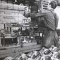
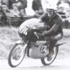
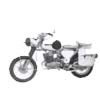
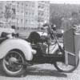
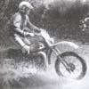
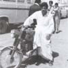
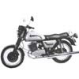
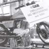
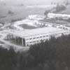

1971 |
Intre 1971 si 1975 jumatate din motocicletele fabricate sunt exportate. |
||
1972 |
La expozitia de toamna din Leipzig, modelul MZ TS 250 este onorat cu medalia de aur la categoria exponate de clasa. Totodata este si un jubileu: 50 de ani de productie de motociclete in Zschopau. |
||
1973 |
MZ isi extinde gama de productie, de exemplu produce ambreiaje pentru automobilul Wartburg. |
 | |
1974 |
In ciuda razboiului rece exportul prin firma de distributie Neckermann este de succes. Sunt exportate 3 000 de motociclete in Statele Unite ale Americii. |
 | |
1975 |
Gama de motociclete produse ajunge la 65 de modele, productia anuala este 92 063 de exemplare, din care 45 400 pentru export. |
 | |
1976 |
Este anul in care se aduc imbunatatiri modelului TS. |
 | |
1977 |
MZ nu mai reprezinta doar o cladire in sudul Zschopaului, ea se extinde prin toata regiunea Sachsen, avand mai multe filiale. |
||
1978 |
Are loc a 25-a editie a concursului deja traditional “In jurul Zschopaului”. |
 | |
1979 |
Printre tarile in care s-au exportat motocicletele MZ se numarau Egipt, Iran si Irak, unde isi onoreaza numele. Se decide mutarea fabricii intr-un sat la 3 km de Zschopau, la Hohndorf. |
 | |
1981 |
Modelul ETZ 250, de 21 de cai-putere deschide era unui nou model si inchide totodata productia modelului TS. Pana la vremea respectiva modelul ES 150 era cel mai bine vandut. |
 | |
1983 |
2 000 000 de motociclete produse de la infiintarea fabricii. |
 | |
1984 |
8 000 de motociclete sunt exportate in China, unde au un succes enorm, China fiind cunoscuta ca o tara a ciclistilor. |
||
1985 |
O echipa MZ devine campion mondial la juniori la categoria enduro. |
||
1987 |
Sunt fabricate 300 de motociclete pe zi, dar din cauza lipsei de materiale nu se poate lucra cu un randament de 100%. MZ si Simpson castiga la cursa de sase zile atat la seniori cat si la juniori. |
 | |
1988 |
Fabrica din Hohndorf se extinde. |
||